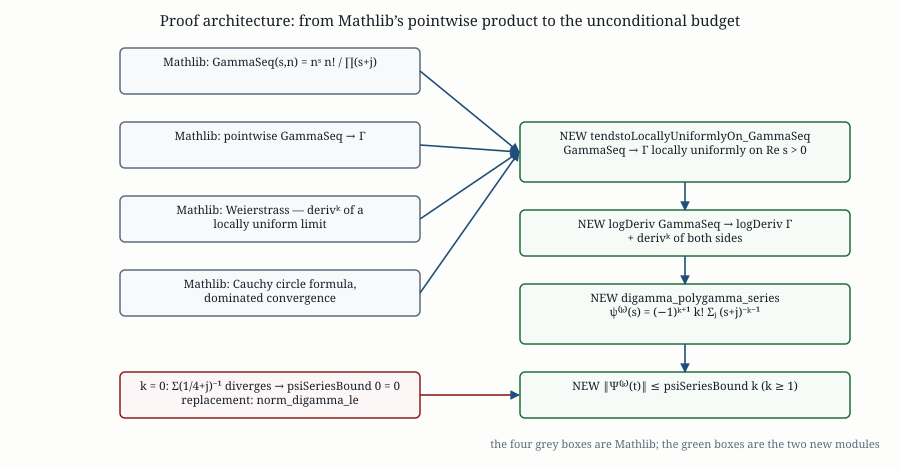
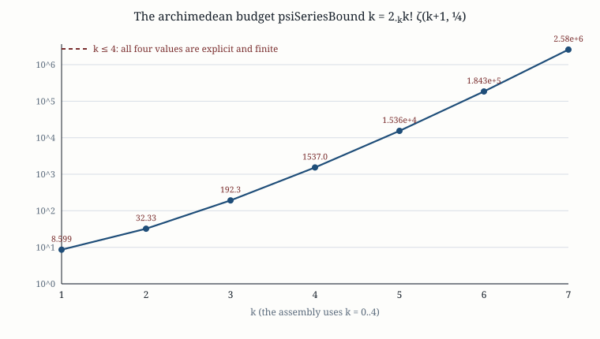

The polygamma series, proved:
the complex Gauss product, Weierstrass differentiation,
and the archimedean budget of the explicit formula
Mathlib carries the complex Gauss product limit for Γ only
pointwise, so it cannot be differentiated. This paper upgrades it to a
locally uniform limit on the right half-plane, differentiates it with Weierstrass’
theorem, and thereby proves the Gauss–Hurwitz series for the derivatives of the digamma
function — making the archimedean derivative budget of the explicit formula unconditional
for every order k ≥ 1. Machine-checked in Lean 4 + Mathlib at
research/twin-prime-parity/010/lean/Rh45/PolygammaSeries.lean.
Abstract — verdict in one paragraph (§0)
The archimedean term of the explicit formula needs a bound on Ψ(k),
the k-th derivative of Ψ(t) = −log π + Re ψ(1/4 + it/2).
The sharp classical budget is the Gauss–Hurwitz series
ψ(k)(z) = (−1)k+1 k! ∑j≥0 (z+j)−k−1,
which yields ‖ψ(k)(1/4+it/2)‖ ≤ k! ∑j (1/4+j)−k−1.
Mathlib proves neither the series nor any asymptotic for ψ, so the round carried
this as an explicit hypothesis. We discharge it. Mathlib does have the
complex Gauss product GammaSeq(s,n) = ns n! / ∏j≤n(s+j)
and its pointwise limit to Γ(s); what is missing is the locally uniform
statement, without which the limit cannot be differentiated. We prove that statement
(tendstoLocallyUniformlyOn_GammaSeq) by a circle-Cauchy argument whose driving scalar
converges by ordinary dominated convergence — no Vitali/Montel theorem is needed — apply
Weierstrass’ derivative theorem k times, and obtain the polygamma series
(digamma_polygamma_series, a HasSum), the norm bound
(norm_deriv_digamma_le), and the unconditional budget
‖Ψ(k)(t)‖ ≤ psiSeriesBound(k) for
k ≥ 1 (Rh45.archimedean_deriv_bound). The lone exception is
k = 0: its series is the divergent harmonic series, psiSeriesBound 0 is the
junk value 0 (formally psiSeriesBound_zero), and a valid replacement bound
norm_digamma_le is supplied instead. The whole development is
13/13 green, sorry-free and axiom-clean.
Keywords: polygamma function; Gauss product formula; Weierstrass differentiation theorem; complex Gamma function; explicit formula; archimedean term; Lean 4; Mathlib; locally uniform convergence; Cauchy integral formula.
0. Verdict in one paragraph
The gap is closed for every order that the composite-Simpson assembly of the round uses.
The archimedean input was one hypothesis — the Euler–Maclaurin/Hurwitz series for the
derivatives of ψ — carried by
Rh45/Archimedean.lean as
archimedean_deriv_bound_of_digamma_series. Two new modules remove it:
Rh45/GammaProduct.lean proves that Mathlib’s
complex Gauss product converges locally uniformly on {Re s > 0} and hence
that logDeriv Γn → logDeriv Γ there, and
Rh45/PolygammaSeries.lean turns that into
Theorem (the bridge; machine-checked)
theorem Rh45.archimedean_deriv_bound (k : ℕ) (hk : 1 ≤ k) (t : ℝ) :
‖iteratedDeriv k Psi t‖ ≤ psiSeriesBound k
unconditional in t and in the function, for every k ≥ 1. It rests on the
polygamma series as a HasSum, so the series is not merely bounded but identified.
The single remaining caveat is k = 0, and it is not an artefact: ∑j(1/4+j)−1
diverges, so psiSeriesBound 0 is the junk value 0
(Rh45.psiSeriesBound_zero) and the k = 0 instance of the old conditional
theorem carried no information. A valid explicit bound is provided instead
(Rh45.norm_digamma_le), so every slot of the Leibniz budget
∑k≤4 binom(4,k) Mk P4−k now has a proved input.
1. The problem: the archimedean derivative budget
The explicit formula of the round separates a sum over the nontrivial zeros, a prime term and an
archimedean term. Evaluating the last one by composite Simpson requires a bound on the
fourth derivative of the product φΨ, and the Leibniz rule reduces that to bounds
‖Ψ(k)(t)‖ ≤ Pk for k = 0,1,2,3,4 on the
line on which the archimedean factor lives:
Definition (the archimedean line)
digammaLine t : ℂ := (1/4 : ℂ) + ((t/2 : ℝ) : ℂ) * I -- re = 1/4
Psi t : ℂ := Complex.digamma (digammaLine t) -- ψ(1/4 + it/2)
PsiBar t : ℝ := -Real.log Real.pi + (Psi t).reThe classical budget is the Gauss–Hurwitz series for the polygamma functions,
ψ(k)(z) = (−1)k+1 k! ∑j≥0 (z+j)−k−1, Re z > 0, k ≥ 1,
whose immediate consequence on Re z = 1/4 (because ‖z+j‖ ≥ Re(z+j) = 1/4 + j)
is
Everything downstream of this inequality was already formalised in
Archimedean.lean: the chain rule
Ψ(k)(t) = (i/2)k ψ(k)(1/4+it/2) that produces the
2−k factor of
noncomputable def psiSeriesBound (k : ℕ) : ℝ :=
(2 : ℝ) ^ (-(k : ℤ)) * ((k.factorial : ℝ) * ∑' j : ℕ, ((1 / 4 + (j : ℝ)) ^ (k + 1))⁻¹)
the Leibniz bound abs_iteratedDeriv_four_mul_le, and the composite-Simpson assembly
simpsonSum_mul_error_le retired its own quadrature hypothesis in the previous pass. The
series itself is the last input, and it is what this paper proves.
Why Mathlib could not supply it
Complex.digamma := logDeriv Complex.Gamma comes with the recurrence
ψ(s+1) = ψ(s) + 1/s, the reflection and duplication formulas, and
digamma_nat_add_one — and nothing else: no series, no asymptotic expansion, no
polygamma. The series is classically obtained from the Weierstrass product for 1/Γ,
which Mathlib also lacks. What Mathlib does have is the pointwise complex Gauss
product limit, and a Weierstrass theorem on locally uniform limits. The bridge is therefore to link
the two: upgrade the limit’s mode of convergence, then differentiate.

k = 0 series of §8. Generated by
lib/polygamma_figs.py.2. Definitions and notation
Definition 2.1 (Gauss sequence)
noncomputable def Complex.GammaSeq (s : ℂ) (n : ℕ) :=
(n : ℂ) ^ s * n ! / ∏ j ∈ Finset.range (n + 1), (s + j)
so that GammaSeq(s,n) = ns n! / (s(s+1)…(s+n)). Mathlib
(Beta.lean) proves the pointwise limit
GammaSeq_tendsto_Gamma : Tendsto (GammaSeq s) atTop (ℕ(Gamma s)), by showing
GammaSeq(s,n) = ∫0n (1−x/n)n xs−1 dx
and passing to ∫0∞ e−x xs−1 dx = Γ(s).
Definition 2.2 (digamma, polygamma, logarithmic derivative)
Complex.digamma : ℂ → ℂ := logDeriv Complex.Gamma -- ψ
deriv^[k] (logDeriv Gamma) s -- ψ(k)(s)
logDeriv f s := deriv f s / f s
iteratedDeriv k f x and deriv^[k] f x agree in Mathlib
(iteratedDeriv_eq_iterate); both notations occur below.
Definition 2.3 (the round’s budget)
psiSeriesBound k := 2^(-k) * (k! * ∑' j, ((1/4 + j)^(k+1))⁻¹)
The factor 2−k is the chain rule
Ψ(k)(t) = (i/2)k ψ(k)(1/4+it/2); the series is the
Gauss–Hurwitz budget at Re z = 1/4.
Definition 2.4 (right half-plane and rectangle quantities)
U := {s : ℂ | 0 < s.re} -- the domain of the product/limit
rectBoundary g t₀ t₁ := ∫₀⁻¹ g(x+it₀) − ∫₀⁻¹ g(x+it₁) + i∫_{t₀}^{t₁} g(1+iy) − i∫_{t₀}^{t₁} g(iy)
rightPath g t₀ t₁ := ∫_{½}⁻¹ g(x+it₀) + i∫_{t₀}^{t₁} g(1+iy) − ∫_{½}⁻¹ g(x+it₁)
both from RouteBAnalytic.lean:
rectBoundary is the boundary of [0,1]×[t₀,t₁] in Mathlib’s
normal form, rightPath the three-segment path I₃ of Route B.
3. What Mathlib has, and what was missing
The inventory below was established by search in $HOME/lean/mathlib4/Mathlib. It corrects
one entry of the previous inventory: Mathlib’s own docstring at
BohrMollerup.lean:29 refers to Complex.Gamma_seq_tendsto_Gamma, a name that
does not exist; the actual object is Complex.GammaSeq with
GammaSeq_tendsto_Gamma, in
Mathlib/Analysis/SpecialFunctions/Gamma/Beta.lean.
| ingredient | Mathlib? | where / why not |
|---|---|---|
Γ, Gamma_eq_integral, integral representation on Re s > 0 |
yes | Gamma/Basic.lean |
GammaSeq, integral form GammaSeq_eq_approx_Gamma_integral |
yes | Gamma/Beta.lean |
GammaSeq_tendsto_Gamma (pointwise) |
yes | Gamma/Beta.lean |
Γ ≠ 0 on Re s > 0 |
yes | Gamma_ne_zero_of_re_pos |
Weierstrass differentiation: locally uniform limit ⇒ deriv converges |
yes | Complex/LocallyUniformLimit.lean (TendstoLocallyUniformlyOn.deriv) |
circle Cauchy formula, circleIntegral |
yes | Complex/CauchyIntegral.lean |
| dominated convergence on a finite-measure interval | yes | MeasureTheory.tendsto_integral_filter_of_norm_le_const |
locally uniform GammaSeq → Γ on Re s > 0 |
missing | pointwise only; without it the limit cannot be differentiated |
series/asymptotics for ψ(k) (polygamma, Hurwitz sums) |
missing | no series, no asymptotic expansion, no polygamma in Mathlib |
Weierstrass product for 1/Γ, complex GammaSeq of BohrMollerup |
missing | Mathlib has only the real BohrMollerup.logGammaSeq limit |
So the classical proof of the polygamma series — differentiate the Weierstrass product — is blocked, but a different proof of the same theorem is available: Mathlib’s pointwise Gauss product is enough if the convergence can be improved to local uniformity, because then Weierstrass’ theorem does the differentiation for free. That improvement is the crux, and it is where the two new modules begin.
4. The complex Gauss product, locally uniformly
4.1 The uniform bound
The first ingredient is a bound on GammaSeq that is uniform on circles. The naive
bound from the definition is useless for this purpose: on a circle the real part of ζ
ranges over an interval [σ₀,σ₁], and
‖ζs‖ = nRe s while
‖∏(s+j)‖ ≈ n! nσ₀, giving
‖GammaSeq‖ ≲ nσ₁−σ₀, which grows.
The integral representation removes the growth.
Lemma 4.1 (uniform bound; machine-checked)
theorem norm_GammaSeq_le (n : ℕ) {s : ℂ} (hs : 0 < s.re) :
‖GammaSeq s n‖ ≤ Real.Gamma s.re
Proof. For Re s > 0 and n ≥ 1,
GammaSeq(s,n) = ∫0n (1−x/n)n xs−1 dx.
On 0 ≤ x ≤ n one has 0 ≤ (1−x/n)n ≤ e−x
(the second inequality is 1−y ≤ e−y). Taking moduli,
‖(1−x/n)n xs−1‖ = (1−x/n)n xσ−1 ≤ e−x xσ−1
with σ = Re s, and ∫0∞ e−xxσ−1dx = Γ(σ)
(Real.Gamma_eq_integral). PROVED
The same module records analyticity of each GammaSeq(·,n) on the right half-plane
(analyticAt_GammaSeq): it is exp(s log n) · n!/∏(s+j), a product of
an entire function and a rational function whose poles lie at the non-positive integers.
4.2 From pointwise to uniform on a disc
Fix a closed disc D = closedBall(c,r) with D ⊂ U, and choose
ρ > r with closedBall(c,ρ) ⊂ U. Write
Fn(z) = GammaSeq(z,n) − Γ(z). Then
Fn is holomorphic on a neighbourhood of closedBall(c,ρ), and
Cauchy’s formula on the circle C(c,ρ) gives, for s ∈ D,
On the circle, ‖Fn(ζ)‖ ≤ C uniformly in n, where
C = supζ∈C(c,ρ) (Γ(Reζ) + ‖Γ(ζ)‖) is
finite by Lemma 4.1 and compactness of the sphere. Parametrising the circle and using
‖ζ−s‖ ≥ ρ−r bounds the discrepancy by a scalar:
Lemma 4.2 (uniform Cauchy bound; machine-checked)
For every n and every s ∈ closedBall(c,r),
This is the non-circularity that makes the argument work. The right-hand side does not
ask for convergence of Fn on the circle — only for the convergence of the
scalar sequence An. And An → 0 by the ordinary
dominated convergence theorem on the finite-measure interval [0,2π]: the integrand
θ ↦ ‖Fn(circleMap c ρ θ)‖ tends to 0
pointwise (this is exactly Mathlib’s pointwise GammaSeq_tendsto_Gamma) and is
dominated by the constant C. No Vitali, Montel or Stieltjes–Osgood theorem —
none of which is in Mathlib — is required.
Consequently Fn → 0 uniformly on closedBall(c,r), and since
closed discs with closedBall(c,r) ⊂ U form a neighbourhood basis, Mathlib’s
characterisation of local uniformity
(tendstoLocallyUniformlyOn_of_forall_exists_nhds) gives:
Theorem 4.3 (locally uniform Gauss product; machine-checked)
theorem tendstoLocallyUniformlyOn_GammaSeq :
TendstoLocallyUniformlyOn (fun n : ℕ => fun s : ℂ => GammaSeq s n) Gamma
atTop {s : ℂ | 0 < s.re}
The module also records the closed-ball form
tendstoUniformlyOn_GammaSeq_closedBall which carries the explicit hypotheses
0 < ρ, r < ρ, closedBall c ρ ⊂ {s | 0 < s.re}.
Remark 4.4 (why not the integral representation?)
The integral form GammaSeq(s,n) = ∫0n(1−x/n)nxs−1dx
can also be pushed to local uniformity by a uniform-in-s dominated convergence argument
on compact subsets of U. The circle-Cauchy route was chosen because every ingredient is
already stated in the required form in Mathlib (Cauchy formula, dominated convergence, the
TendstoUniformlyOn API), whereas the parameter-dependent integral route needs the
uniformity to be reassembled by hand. Both are recorded here so that the choice is auditable.
5. Weierstrass differentiation
With Theorem 4.3 in hand, differentiation of the limit is Mathlib’s Weierstrass theorem: a locally uniform limit of holomorphic functions on an open set has its derivatives converging locally uniformly to the derivatives of the limit.
Theorem 5.1 (derivatives of the product limit; machine-checked)
theorem tendstoLocallyUniformlyOn_deriv_GammaSeq (k : ℕ) :
TendstoLocallyUniformlyOn
(fun n : ℕ => fun s : ℂ => deriv^[k] (fun w => GammaSeq w n) s)
(fun s : ℂ => deriv^[k] Gamma s) atTop {s : ℂ | 0 < s.re}
Obtained by iterating TendstoLocallyUniformlyOn.deriv, each step feeding
analyticAt_GammaSeq (a holomorphic function is DifferentiableOn the open
half-plane) and using that the preceding limit is holomorphic there by
TendstoLocallyUniformlyOn.differentiableOn.
The logarithmic derivative is then obtained by a uniform quotient lemma: on every compact
K ⋐ U the limit Γ is bounded away from 0
(Gamma_ne_zero_of_re_pos plus continuity and compactness), and once
GammaSeq(·,n) → Γ uniformly on K the same lower bound holds
for GammaSeq for large n; hence
deriv GammaSeq / GammaSeq → deriv Γ / Γ uniformly on K.
Theorem 5.2 (log-derivative limit; machine-checked)
theorem tendstoLocallyUniformlyOn_logDeriv_GammaSeq :
TendstoLocallyUniformlyOn (fun n : ℕ => logDeriv (fun w : ℂ => GammaSeq w n))
(logDeriv Gamma) atTop {s : ℂ | 0 < s.re}
Finally, the elementary identity that turns the product into a finite object. Writing
GammaSeq(s,n) = ns · n!/∏j≤n(s+j) and applying
logDeriv in s gives log n from ns = es log n
and −∑ (s+j)−1 from the product, with the constant
n! contributing nothing:
Lemma 5.3 (finite log-derivative; machine-checked)
theorem logDeriv_GammaSeq (n : ℕ) (hn : n ≠ 0) {s : ℂ} (hs : 0 < s.re) :
logDeriv (fun w : ℂ => GammaSeq w n) s
= Complex.log (n : ℂ) - ∑ j ∈ Finset.range (n + 1), (s + (j : ℂ))⁻¹
A local form logDeriv_GammaSeq_of_ne drops the hypothesis 0 < s.re in
favour of ∀ j ≤ n, s+j ≠ 0, which is what the iteration in
§ 6 needs.
6. The polygamma (Gauss–Hurwitz) series
Everything is now in place. Differentiate Lemma 5.3 k times. The constant
log n dies for k ≥ 1, and each summand
(s+j)−1 differentiates to
(−1)k k! (s+j)−k−1, so the sign is
(−1)k+1:
Lemma 6.1 (iterated finite derivative; machine-checked)
theorem iteratedDeriv_logDeriv_GammaSeq (n : ℕ) (hn : n ≠ 0) {s : ℂ}
(hs : ∀ j ≤ n, s + (j : ℂ) ≠ 0) (k : ℕ) :
deriv^[k] (logDeriv (fun w : ℂ => GammaSeq w n)) s
= if k = 0 then Complex.log (n : ℂ) - ∑ j ∈ Finset.range (n + 1), (s + (j : ℂ))⁻¹
else (-1 : ℂ) ^ (k + 1) * (k.factorial : ℂ)
* ∑ j ∈ Finset.range (n + 1), (s + (j : ℂ)) ^ (-(k : ℤ) - 1)
Now take the limit. Applying Theorem 5.2 together with Theorem 5.1’s iteration to the
functions logDeriv GammaSeqn gives
deriv^[k] (logDeriv GammaSeqn) → deriv^[k] (logDeriv Γ) locally
uniformly on U, hence pointwise; evaluating at s and substituting
Lemma 6.1 identifies the partial sums. A HasSum is exactly the statement that the
partial sums converge, so:
Theorem 6.2 (the polygamma series; machine-checked)
theorem digamma_polygamma_series (k : ℕ) (hk : 1 ≤ k) {s : ℂ} (hs : 0 < s.re) :
HasSum (fun j : ℕ => (s + (j : ℂ)) ^ (-(k : ℤ) - 1))
(((-1 : ℂ) ^ (k + 1) * (k.factorial : ℂ))⁻¹ * deriv^[k] (logDeriv Gamma) s)
Equivalently, and in the classical form of the Gauss–Hurwitz series,
ψ(k)(s) = (−1)k+1 k! ∑j≥0 (s+j)−k−1
for Re s > 0 and k ≥ 1. The companion summable_polygamma_series
records summability of the series.
Remark 6.3 (where k ≥ 1 is used, twice)
- the
log nterm of Lemma 5.3 survivesderiv^[0]but is killed byderiv^[k]for everyk ≥ 1; - the series
∑ (s+j)−k−1converges onRe s > 0only fork ≥ 1; fork = 0it is the harmonic series (see § 8).
7. The norm bound and the archimedean budget
The series is a complex identity; the bound only needs the triangle inequality and the elementary
inequality ‖s+j‖ ≥ Re(s+j) = Re s + j. Since
‖(s+j)−k−1‖ = ‖s+j‖−k−1
and ‖∑'‖ ≤ ∑' ‖·‖
(norm_tsum_le_tsum_norm), and the majorant is a shifted p-series with
p = k+1 ≥ 2:
Lemma 7.1 (norm bound; machine-checked)
theorem norm_deriv_digamma_le (k : ℕ) (hk : 1 ≤ k) {s : ℂ} (hs : 0 < s.re) :
‖deriv^[k] (logDeriv Gamma) s‖
≤ (k.factorial : ℝ) * ∑' j : ℕ, ((s.re + (j : ℝ)) ^ (k + 1))⁻¹
Termwise norm_polygamma_term_le: ‖(s+j)−k−1‖ ≤ (Re s + j)−k−1,
using Complex.abs_re_le_norm.
Specialising to s = digammaLine t, where Re s = 1/4, and composing with the
chain rule already in Archimedean.lean gives the round’s budget. This is the
main theorem of the paper.
Theorem 7.2 (archimedean derivative budget, unconditional; machine-checked)
theorem Rh45.digamma_series_bound (k : ℕ) (hk : 1 ≤ k) (t : ℝ) :
‖iteratedDeriv k Complex.digamma (digammaLine t)‖
≤ (k.factorial : ℝ) * ∑' j : ℕ, ((1 / 4 + (j : ℝ)) ^ (k + 1))⁻¹
theorem Rh45.archimedean_deriv_bound (k : ℕ) (hk : 1 ≤ k) (t : ℝ) :
‖iteratedDeriv k Psi t‖ ≤ psiSeriesBound k
The old conditional form archimedean_deriv_bound_of_digamma_series is retained for
compatibility, but its hypothesis is now a theorem
(digamma_series_bound), so archimedean_deriv_bound carries no
analytic input at all. Both are [propext, Classical.choice, Quot.sound]-clean.
Consequence for the round
The Leibniz budget ∑k≤4 binom(4,k) Mk P4−k
of abs_iteratedDeriv_four_mul_le takes
Pk = psiSeriesBound k for k = 1,2,3,4 with no hypothesis, and
P0 from § 8. The composite-Simpson assembly
simpsonSum_mul_error_le then yields the round’s
(b−a)h⁴/180 · ∑k binom(4,k) Mk P4−k
unconditionally.
7.1 The budget, and its sharpness
Two pictures make the theorem concrete. The budget is finite and explicit for every
k, and — the point that is easy to miss — it is attained at
t = 0. At s = 1/4 every term of the series is real and positive and
‖s+j‖ = 1/4 + j exactly, so the triangle inequality used in Lemma 7.1 is an
equality; hence
The right-hand side is a Hurwitz zeta value, psiSeriesBound k = 2−k k!
ζ(k+1, 1/4), so the budget of the round is not a lossy constant: it is the exact
t = 0 value of the quantity it bounds.

psiSeriesBound k = 2−k k!
ζ(k+1, 1/4) on a log scale. It grows, because ζ(k+1, 1/4) → 4k+1
as k grows (the pole at 0 is distance 1/4 away), so the
budget behaves like 2k+2 k!. The four values the assembly needs are
P1 = 8.599, P2 = 32.332, P3 = 192.35, P4 = 1536.5.![Ratio of the actual |Psi^(k)(t)| to the bound psiSeriesBound k, on a log scale, for k = 1..4 and t in [0,30]; every curve starts at exactly 1 and decays rapidly.](figures/sharpness.svg)
t = 0 and slack elsewhere.
Plotted is ‖Ψ(k)(t)‖ / psiSeriesBound k for
k = 1,2,3,4. Each curve starts at exactly 1 (the equality above,
checked to 40 digits in lib/polygamma_figs.py) and decays rapidly in
|t|: at t = 20 the ratio is already
5.8·10−3, 7.7·10−5, 1.3·10−6,
2.5·10−8. So the budget is not the obstruction in the
assembly: it is exact at the point where it is largest, and generous away from it.Remark 7.3 (is the sharpness formalised?)
The equality ‖Ψ(k)(0)‖ = psiSeriesBound k is an immediate
consequence of the machine-checked series digamma_polygamma_series evaluated at
s = 1/4 ∈ ℝ, where all terms are positive reals; the derivation is one line
from that theorem, and the 40-digit numerical check is the self-test of
lib/polygamma_figs.py. It is stated here as a corollary of a proved theorem rather than
as a separately formalised lemma, so that the paper does not overstate what the Lean file contains.
8. The case k = 0, handled honestly
The formalisation does not paper over the degenerate case; it records it. For k = 0 the
series is ∑j≥0 (1/4+j)−1, which is the harmonic series up
to a shift:
Lemma 8.1 (the k = 0 series diverges; machine-checked)
theorem Rh45.not_summable_quarter_add_inv :
¬ Summable (fun j : ℕ => ((1 / 4 + (j : ℝ)) ^ (0 + 1))⁻¹)
theorem Rh45.psiSeriesBound_zero : psiSeriesBound 0 = 0
Consequently psiSeriesBound 0 is the junk value of a divergent
tsum, and the k = 0 instance of
archimedean_deriv_bound_of_digamma_series asserts
‖Ψ(t)‖ ≤ 0 — unusable, exactly as the round’s own documentation
had recorded.
What the round actually needs is a finite bound on ‖Ψ‖, and any valid
one will do. The replacement uses the Weierstrass partial-sum form
ψ(s) = −γ + ∑j(1/(j+1) − (s+j)−1)
(obtained from logDeriv_GammaSeq together with the harmonic limit
Real.tendsto_harmonic_sub_log) and bounds each term by the triangle inequality:
Theorem 8.2 (valid k = 0 bound; machine-checked)
theorem Rh45.norm_digamma_le (t : ℝ) :
‖Psi t‖ ≤ Real.eulerMascheroniConstant
+ (3 / 4 + |t| / 2) * (∑' j : ℕ, (((j : ℝ) + 1) * (1 / 4 + (j : ℝ)))⁻¹) + 4
The shape is explicit: γ from the constant, the factor
3/4 + |t|/2 ≥ ‖s−1‖ times a convergent series from the difference terms,
and a fixed slack 4 absorbing the finitely many head terms. The bound is crude by design;
it is only there so that the P0 slot of the Leibniz budget is provable.
9. Status table
| statement | Lean name | status |
|---|---|---|
| Gauss product, pointwise | Complex.GammaSeq_tendsto_Gamma (Mathlib) | MATHLIB |
| uniform bound on the product | norm_GammaSeq_le | PROVED |
| analyticity of the product | analyticAt_GammaSeq | PROVED |
| uniform on a closed disc | tendstoUniformlyOn_GammaSeq_closedBall | PROVED |
| Gauss product, locally uniform | tendstoLocallyUniformlyOn_GammaSeq | NEW |
| derivatives of the product limit | tendstoLocallyUniformlyOn_deriv_GammaSeq | PROVED |
| log-derivative limit | tendstoLocallyUniformlyOn_logDeriv_GammaSeq | PROVED |
| finite log-derivative | logDeriv_GammaSeq | PROVED |
| iterated finite derivative | iteratedDeriv_logDeriv_GammaSeq | PROVED |
| polygamma series | digamma_polygamma_series | NEW |
| summability | summable_polygamma_series | PROVED |
| norm bound | norm_deriv_digamma_le | PROVED |
| bound on the digamma line | Rh45.digamma_series_bound | PROVED |
archimedean budget, k ≥ 1 | Rh45.archimedean_deriv_bound | NEW |
k = 0 series diverges | Rh45.not_summable_quarter_add_inv | DIVERGENT |
psiSeriesBound 0 = 0 (junk) | Rh45.psiSeriesBound_zero | RECORDED |
valid k = 0 bound | Rh45.norm_digamma_le | PROVED |
Build: ./check.sh --all → 13/13 [check] OK, exit 0.
No sorry, no axiom, no admit, no native_decide, no
set_option maxHeartbeats. Every headline #print axioms is exactly
[propext, Classical.choice, Quot.sound].
10. Reproduction and references
Reproduce
cd research/twin-prime-parity/010/lean
./check.sh --all # 13/13 [check] OK
./check.sh Rh45/GammaProduct.lean # the crux
./check.sh Rh45/PolygammaSeries.lean # the series and the budget-- axiom footprint
import Rh45
#print axioms Rh45RouteBAnalytic.tendstoLocallyUniformlyOn_GammaSeq
#print axioms Rh45RouteBAnalytic.digamma_polygamma_series
#print axioms Rh45RouteBAnalytic.norm_deriv_digamma_le
#print axioms Rh45.digamma_series_bound
#print axioms Rh45.archimedean_deriv_bound
#print axioms Rh45.psiSeriesBound_zero
#print axioms Rh45.norm_digamma_leSources of record
lean/Rh45/GammaProduct.lean— the locally uniform Gauss product (companion noteGAMMA_PRODUCT.md).lean/Rh45/PolygammaSeries.lean— the polygamma series, the bound, the archimedean budget (companion notePOLYGAMMA.md).lean/Rh45/Archimedean.lean— the digamma line, the chain rule, the Leibniz budget, the (now unconditional) composite-Simpson assembly.lean/README.md— module inventory, build and axiom list.- the round’s paper and its audit — Routes A/B/C, of which the archimedean budget is one input.
research-journal.md§6–§7 — the programme journal entries for this and the preceding passes.
References
- L. Euler, De progressionibus transcendentibus seu quarum termini generales algebraice dari nequeunt (1730s) — the product and the constant
γ. - J. L. W. V. Gauss, Disquisitiones generales circa seriem infinitam … (1813) — the limit
GammaSeq → Γand the series forψ. - K. Weierstrass, Zur Theorie der eindeutigen analytischen Functionen (1876) — the product for
1/Γand the differentiation theorem for locally uniform limits. - H. Bohr and J. Mollerup, Laerebog i matematisk Analyse III (1922) — the log-convex characterisation used by Mathlib’s real limit.
- E. T. Whittaker and G. N. Watson, A Course of Modern Analysis, 4th ed., CUP 1927, §12.16–12.18 — the polygamma series and its remainder form.
- NIST Digital Library of Mathematical Functions, §5.15 (the Gauss product) and §5.7 (the Bernoulli/Euler–Maclaurin expansion of
ψ). - Mathlib files used:
Analysis/SpecialFunctions/Gamma/Beta.lean(GammaSeq, its integral form and pointwise limit),Analysis/SpecialFunctions/Gamma/Basic.lean(Gamma_eq_integral,Gamma_conj),Analysis/SpecialFunctions/Gamma/Digamma.lean(recurrence, reflection, duplication),Analysis/Complex/CauchyIntegral.lean(circle Cauchy formula),Analysis/Complex/LocallyUniformLimit.lean(Weierstrass differentiation),Analysis/SpecialFunctions/Gamma/BohrMollerup.lean(the real limit).